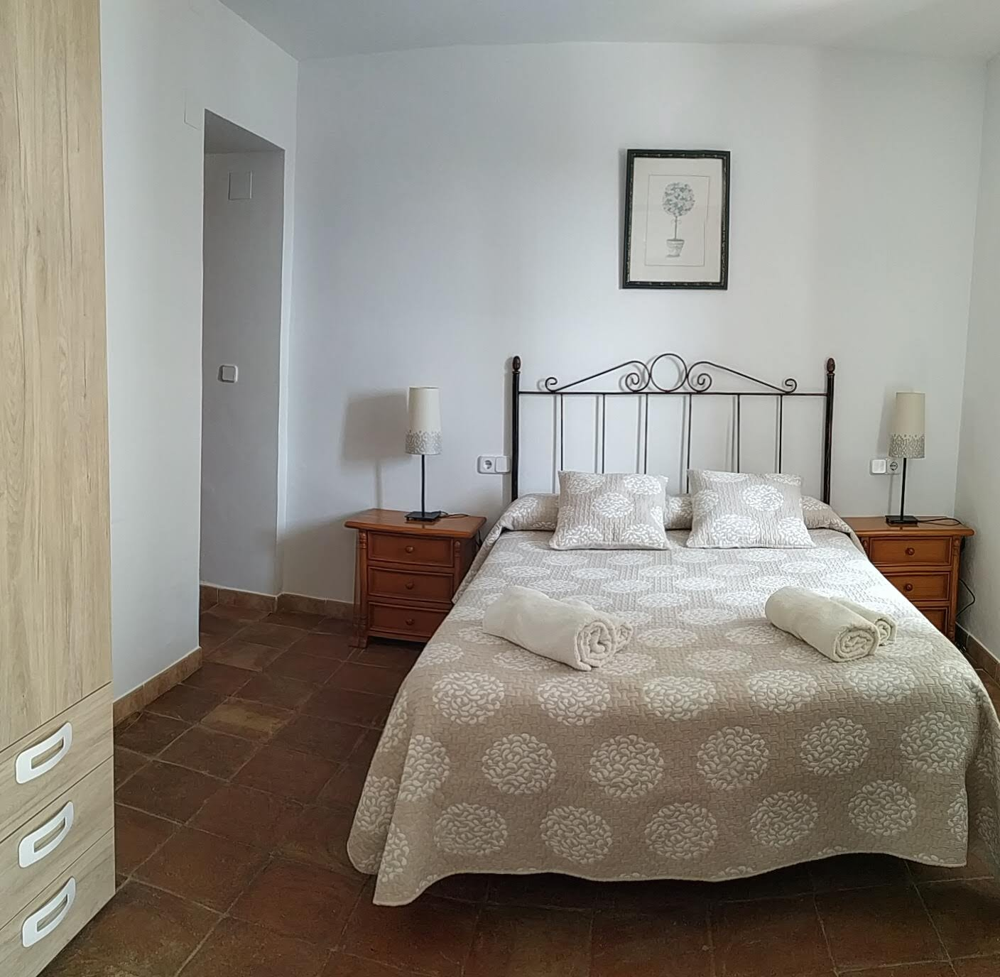
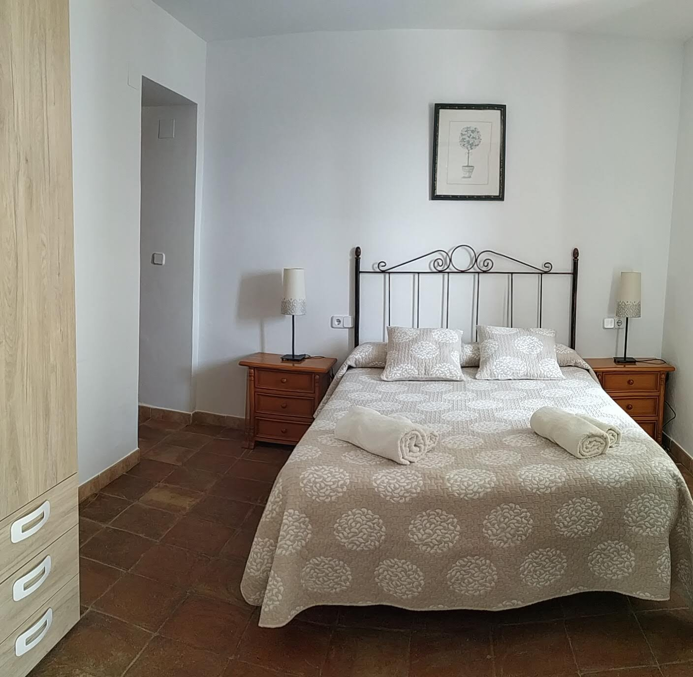

.jpeg)
.jpeg)
.jpeg)

Router with Wi-Fi Internet access. ADSL up to 10Mb/s.

We have a satellite dish for foreign channels, in addition to our own native channels..
2 rooms are air-conditioned. We also have 2 fridges.
 

It has 4 bedrooms, 3 bathrooms + 1 outside and 7 beds + 1 sofa bed. Capacity for 10 people.
The house has a barbecue, the basic utensils for its use are included and firewood can be included at an extra cost..

The house has an enclosure with an 8x4x1.75m swimming pool (shallow end 1.4m) and a shower..

The nearest beach is Torre del mar about 27KM (25 minutes by car).


In the main living room there is a small fireplace capable of heating the whole room. Wood will be included at an extra charge..

We have different types of plants around the house, as well as a swing for the little ones..
The Vilo baths is an Arab water pool or spa with extraordinary sulphur, magnesium-calcium and nitrogen waters, which gush forth at 21 degrees Celsius and whose curative properties are particularly suitable for skin diseases. It is located in Guaro about 2 km from Periana.
A reservoir with a capacity of 170 hm³ and 565 hectares, it is the reservoir with the largest capacity in Malaga. You can practice nautical sports, hiking or have a barbecue at the reservoir. La romería de Periana . You can also find restaurants and there is a campsite nearby. This is located near the village of La Viñuela and Los Romanes.
A 50m long bridge at a height of 78m that offers incredible views, It is the 3rd largest bridge in Spain in natural spaces and here in addition to this bridge there are also several hiking trails through the mountains. This is located in the village of Canillas de aceituno.
On this route you will find olive trees with perimeters of 7.4, 5.5, 6.5 m among others, which are 1500, 1000 and 1200 years old. Along the route you can enjoy the mark that time has left on these olive trees, turning them into true artistic sculptures. This is located in the village of Periana.
The nearest village is Periana, 4km away, where there are different establishments where you can buy food such as Día and several restaurants such as Bar Verdugo. Another recommended establishment is Rincón el Colorín located in Alfarnatejo. Also right next to the reservoir of la viñuela we have 2 restaurants Asador el camping y Restaurante El Pantano.